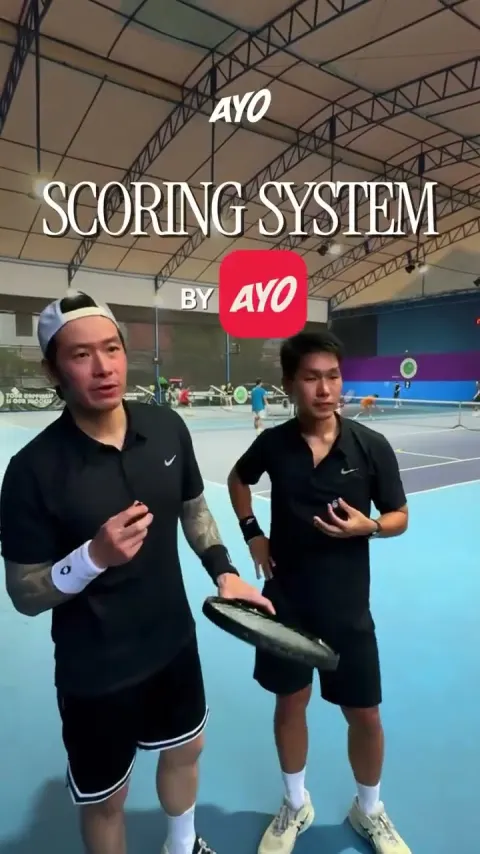
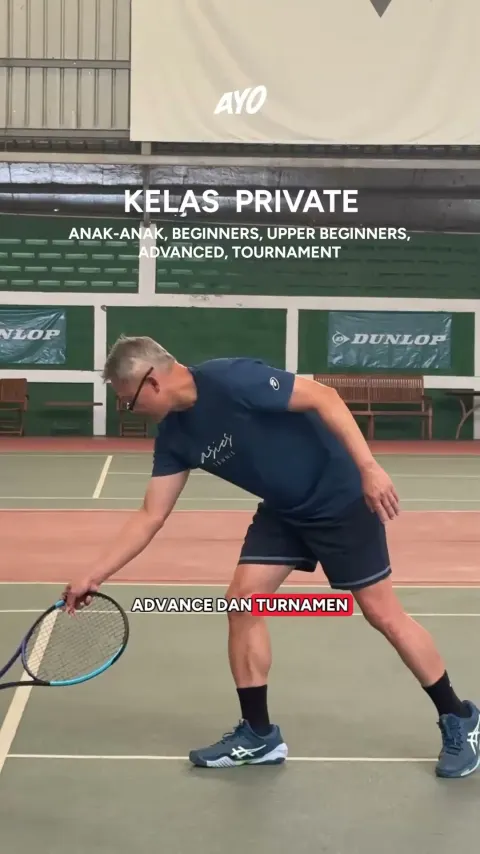
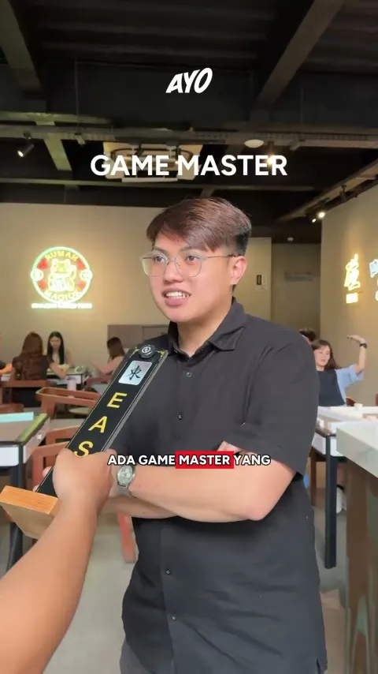
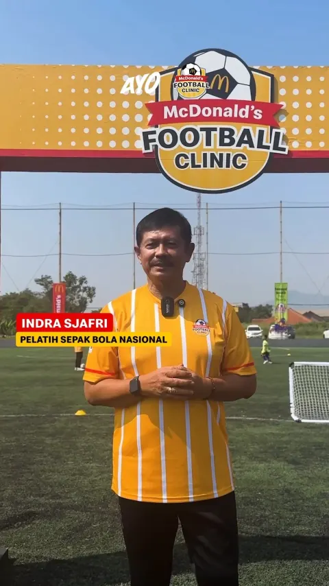
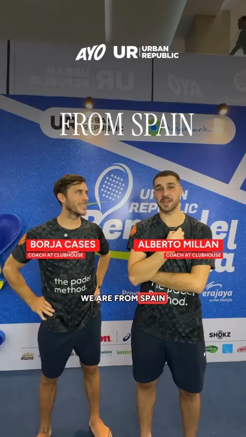
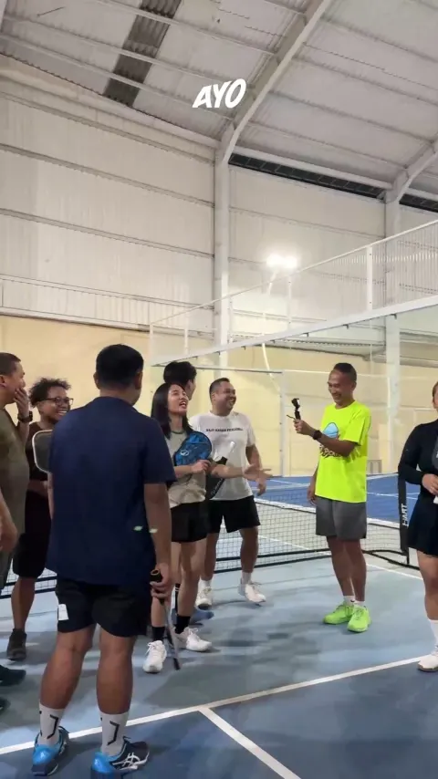

Testimonials
Real stories from players, hosts, and venue owners — straight from our YouTube Shorts.Real stories from the AYO community.

Shorts · 1:46 Straight from the players and organizers themselves! My Club HouseTournament · Tennis
Shorts · 1:46 From tennis legend to the next generation. Wibowo HadisubrotoTennis Academy · Bandung
Shorts · 1:45 Mahjong is having a moment. Rumah MaciokVenue · Mahjong
Shorts · 1:44 Mimpi besar dimulai dari satu langkah kecil. McDonald's Football ClinicBrand · Football clinic
Shorts · 2:11 Spain's pro players. One epic exhibition match. Urban Republic Berpadel RiaEvent · Padel exhibition
Shorts · 1:55 “Pickleball is easy.” Is it really? Terpickle PickleCommunity · Pickleball